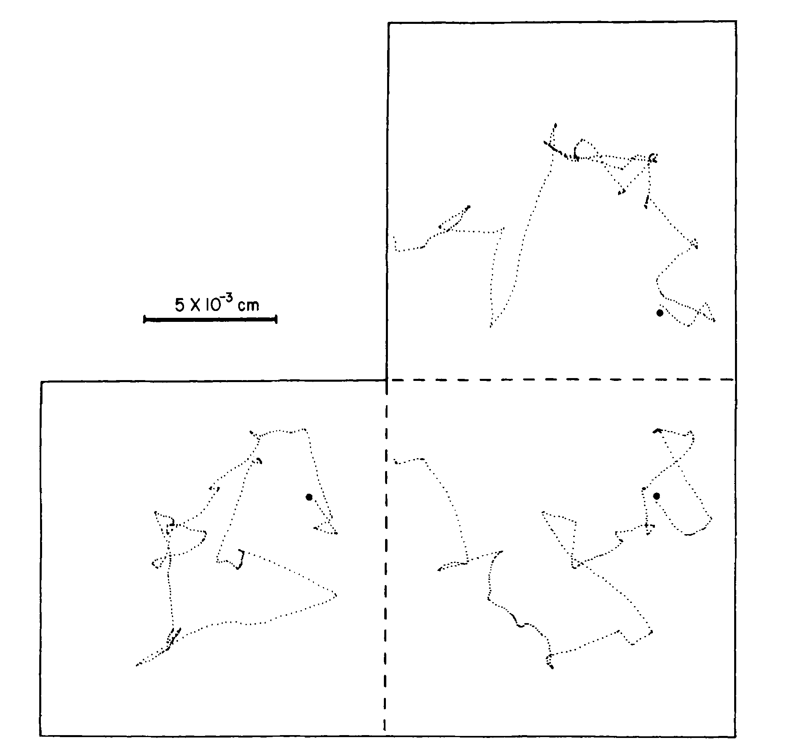
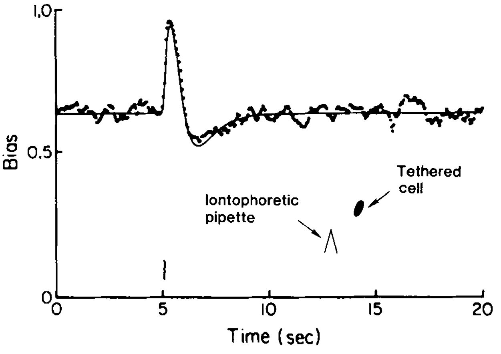
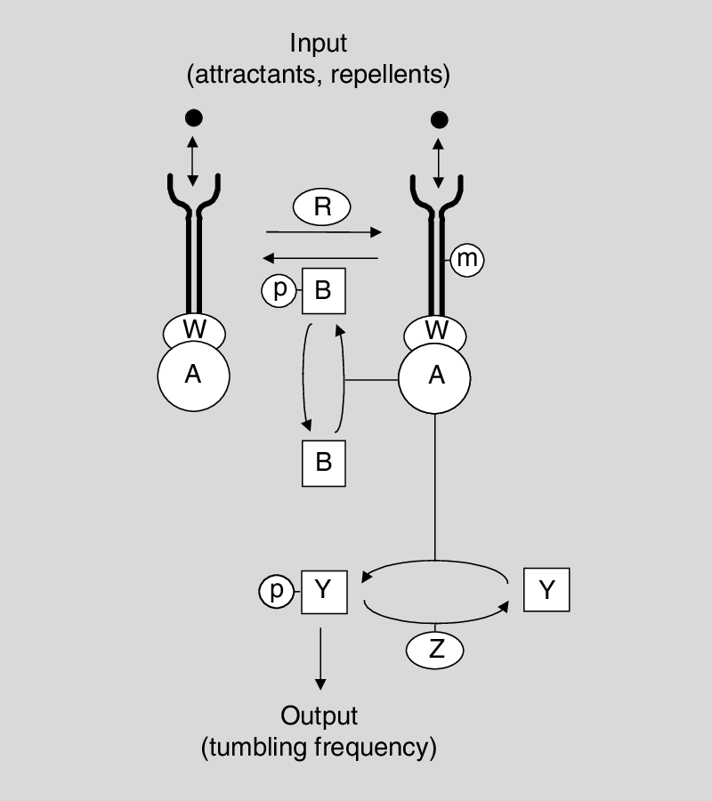
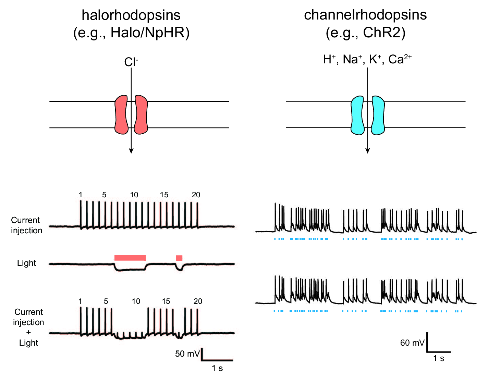
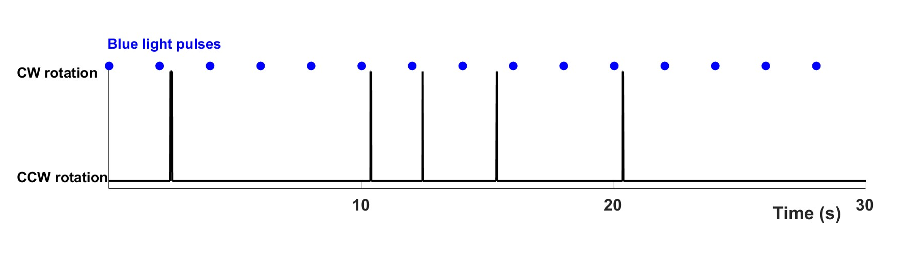
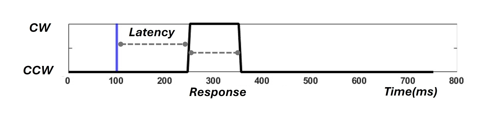
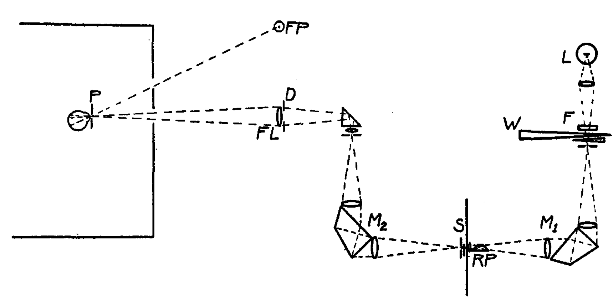
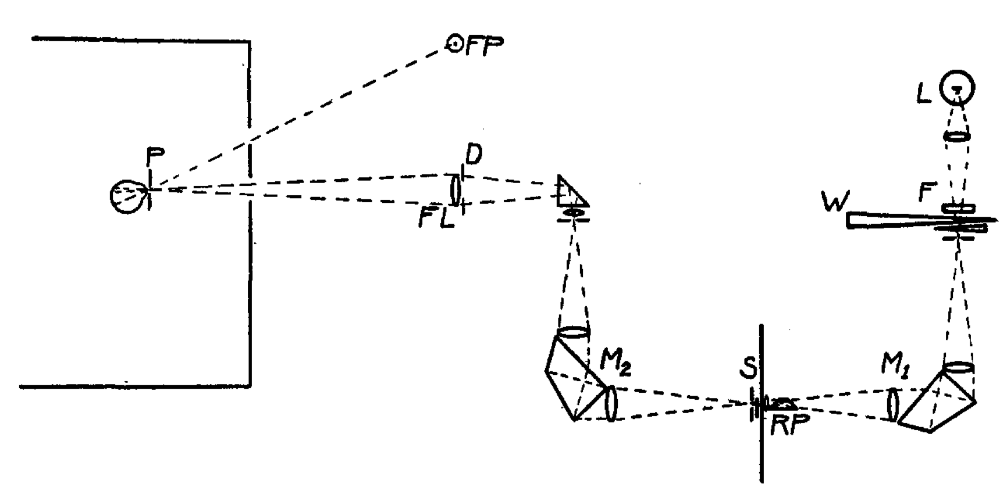
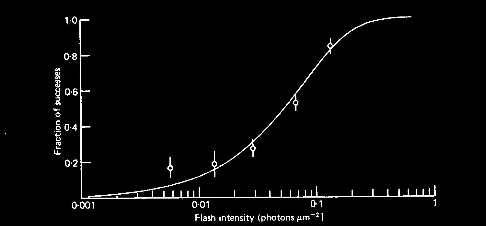

https://bit.ly/SamuelBLAST2025
Bacterial Chemotaxis
Aravi Samuel


"I would study bacteria, but I don't know how to tame them."
-Max Delbrück
Escherichia coli
Biased random walks

Wild-type E. coli cell executing a random walk in a homogeneous medium.
Planar projections of a 3D track
Flagella rotate


CCW rotation → run
CW rotation → tumble
"If bacterial flagella rotate, the structures at the base of the flagellum
deserve more attention than they have received thus far."
Berg and Brown, 1972
The impulse response

Small change in 'bound receptor' (0.0042) → Large change in bias (0.23)
Block, Segall, and Berg, 1982
Signal transduction

increase [cheY-P] → increase CW bias
decrease [cheY-P] → decrease CW bias
Signal transduction observed

Sourjik and Berg, 2002
Signal amplification by ultrasensitivity

Cluzel et al. 2000
Optogenetics?
Boyden, 2012
Optogenetic control of bias

Start with high bias
Optogenetic control of bias

Flash → End with low bias
Optogenetic control of bias

Start with low bias
Optogenetic control of bias

Flash → End with high bias
Avena sativa

Phototropin 1

Unlit state
Phototropin 1

Lit state
AlphaFold


Blue light → uncaging → active CheY
Dark → re-caging → inactive CheY
Optogenetic impulse response
Optogenetic impulse response

Dissecting the impulse response
Response duration
One-step reaction: \[ \space \text{CW} \space \xrightarrow{k} \text{CCW} \]
Poisson interval distribution: \[ \space p(t) = ke^{-kt} \]
Response latency
Multi-step reaction: \[ \text{CCW} \rightarrow \left[ 1 \xrightarrow{k} 2 \xrightarrow{k} ... \xrightarrow{k} N \right] \rightarrow \text{CW} \]
Gamma distribution: \[ \space p(t) = \frac{k^N t^{N-1}}{\Gamma(N)}e^{-kt} \]
Two step reaction? \[ N \sim 2 \]
 

Poisson statistics
Large number of potential
quantal responses: $N$
Small probability of a successful
quantal response: $p$
Mean number of quantal responses
in each trial: $n = pN$
The Poisson limit:
$n \lll N$
Poisson statistics
Large number of potential
quantal responses: $N$
Small probability of a successful
quantal response: $p$
Mean number of quantal responses
in each trial: $n = pN$
The Poisson limit:
$n \lll N$
Poisson statistics
$a$, mean number of quantal responses per flash
Poisson statistics gives probability of $n$ responses: \[ P_n = \frac{a^n e^{-a}}{n!} \]
Probability of Seeing is probability that $n$ exceeds $\theta$: \[ P_{see}=\sum_{k=\theta}^{\infty} P_k \]
Poisson statistics
$a$, mean number of quantal responses per flash
Poisson statistics gives probability of $n$ responses: \[ P_n = \frac{a^n e^{-a}}{n!} \]
Probability of Seeing is probability that $n$ exceeds $\theta$: \[ P_{see}=\sum_{k=\theta}^{\infty} P_k \]

Threshold for seeing

Quantal responses of the rod cell

Electrode collects the current entering the outer segment
→ current changes can be measured.
Baylor, Lamb, Yau (1979)
Frequency of seeing in a single rod
\[ \theta = 1 \]
Probability of seeing
for the bacterial flagellar motor
Motivation

"Is any of this knowledge practical? The reading of the external environment by cells of all types, leading to responses in growth or motility, is fundamental to life. Bacterial chemotaxis provides a model for learning how such processes can work. However this is not what has motivated me. I have wanted to know, simply, how such a tiny creature does its thing. How, for example, has it solved the problem of finding greener pastures within the constraints imposed by physics? This is a matter of curiosity. Curiosity is the driving force of basic science."
-Howard Berg
Acknowledgments

Alina Vrabioiu

Dean's Competitive Fund, Harvard
Chris Stubbs, Jeff Lichtman

Gabriel Hosu
Team fly
David Zimmerman
Stan Lazopulo
Team worm
Helena Casademunt
Core Park
Ishaan Chandok
Team undergrad
Rafael Jacobsen
Sophia Kim
Thierry Emonet
CheY inactivation by sequestration

In the `lit' state, AsLOV2 binds to PDZ
CAD forms a dodecameric sequestration scaffold
Optogenetic switching
from CW → CCW rotation
Optogenetic switching
from CW → CCW rotation
Measuring the response curve
with long-lived probes